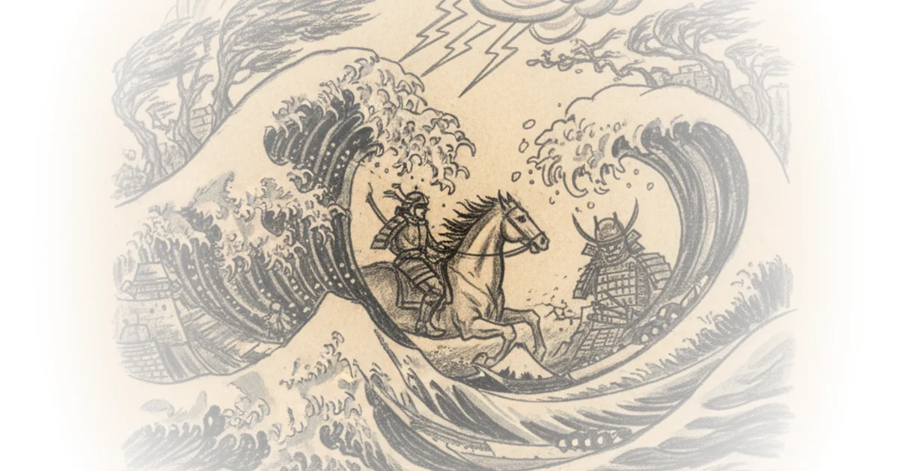
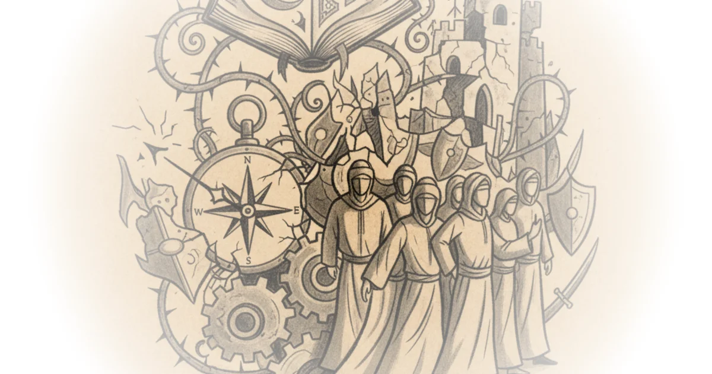
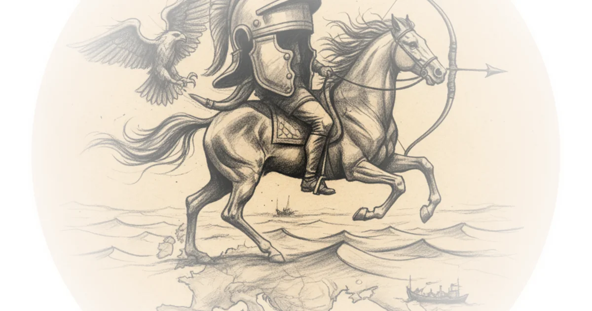
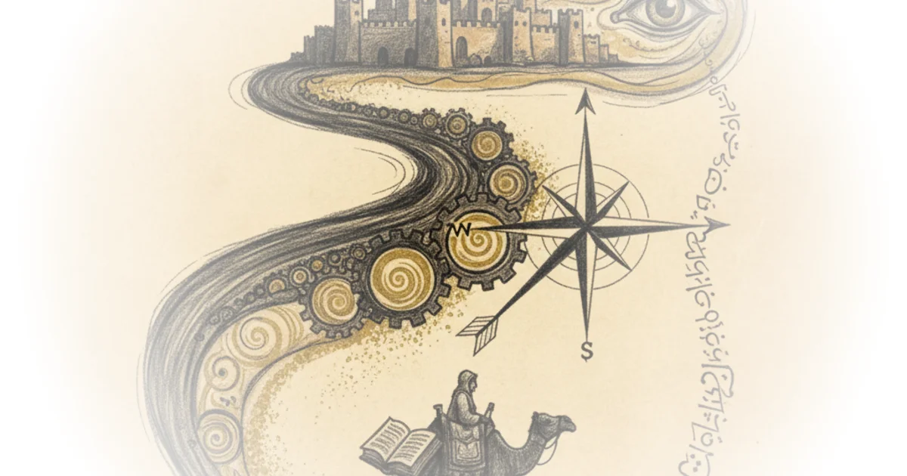
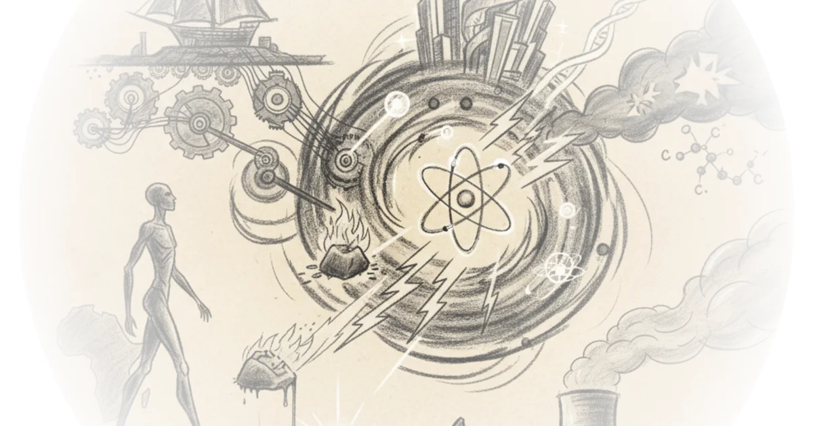

The bitcoin green revolution - is cathie wood right about the environmental impact of bitcoin? Patrick Boyle · Patrick Boyle ·Apr 25, 2021 · 11 min read · History
Muslim schism: How Islam split into the sunni and shia branches Kings and Generals · Kings and Generals ·Apr 20, 2021 · 14 min read · History
Thomas cochrane: Craziest sea captain in history Kings and Generals · Kings and Generals ·Jan 14, 2021 · 59 min read · History
12. The inca - cities in the cloud Paul Cooper · Fall of Civilizations ·Jan 12, 2021 · 128 min read · History
How Rome conquered Greece - Roman history documentary Kings and Generals · Kings and Generals ·Nov 29, 2020 · 89 min read · History
Dan carlin’s hardcore history 66 - supernova in the East 5 Dan Carlin · Dan Carlin ·Nov 14, 2020 · 168 min read · History
The man who almost faked his way to a nobel prize BobbyBroccoli · BobbyBroccoli ·Aug 6, 2020 · 37 min read · History
Aurelian: Emperor who restored the world Kings and Generals · Kings and Generals ·Aug 6, 2020 · 18 min read · History
Real ghost of tsushima - mongol invasion of Japan documentary Kings and Generals · Kings and Generals ·Jul 17, 2020 · 12 min read · History 
René descartes - meditation #1 - the method of doubt Jeffrey Kaplan · Jeffrey Kaplan ·Jun 25, 2020 · 33 min read · History
Origins of the Muslim brotherhood Shirvan Neftchi · CaspianReport ·Jun 14, 2020 · 11 min read · History 
Early Muslim expansion - khalid, yarmouk, al-Qadisiyyah documentary Kings and Generals · Kings and Generals ·May 3, 2020 · 85 min read · History
Third crusade 1189-1192: From hattin to jaffa documentary Kings and Generals · Kings and Generals ·Mar 15, 2020 · 66 min read · History
Hashashins: Origins of the order of assassins Kings and Generals · Kings and Generals ·Mar 12, 2020 · 17 min read · History
10. China's han dynasty - the first empire in flames Paul Cooper · Fall of Civilizations ·Feb 24, 2020 · 108 min read · History
Caesar in gaul - Roman history documentary Kings and Generals · Kings and Generals ·Jan 9, 2020 · 62 min read · History
Plastic pollution : what are the sustainable alternatives? Dave Borlace · Just Have a Think ·Jan 5, 2020 · 13 min read · History
Roman imperial cavalry - armies and tactics documentary Kings and Generals · Kings and Generals ·Jan 2, 2020 · 15 min read · History 
Leopold & loeb's perfect murder gone wrong Devin Stone · LegalEagle ·Jan 1, 2020 · 31 min read · History
Wars of roses 1455-1487 - english civil wars documentary Kings and Generals · Kings and Generals ·Dec 24, 2019 · 38 min read · History
8. The sumerians - fall of the first cities Paul Cooper · Fall of Civilizations ·Oct 25, 2019 · 95 min read · History
Two unknown black men who saved thousands of lives Rohin Francis · Medlife Crisis ·Sep 26, 2019 · 13 min read · History
7. The songhai empire - Africa's age of gold Paul Cooper · Fall of Civilizations ·Aug 29, 2019 · 88 min read · History 
Nuclear energy in the 21st century Dave Borlace · Just Have a Think ·Aug 11, 2019 · 12 min read · History 
Pyrrhus and pyrrhic war - kings and generals documentary Kings and Generals · Kings and Generals ·Jul 25, 2019 · 39 min read · History
Where do medical words come from? Rohin Francis · Medlife Crisis ·Jul 8, 2019 · 11 min read · History